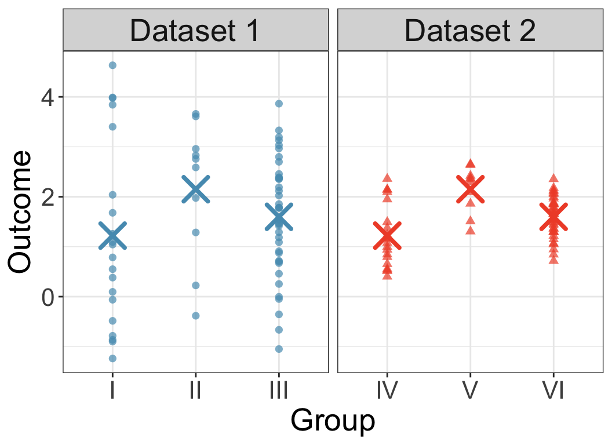
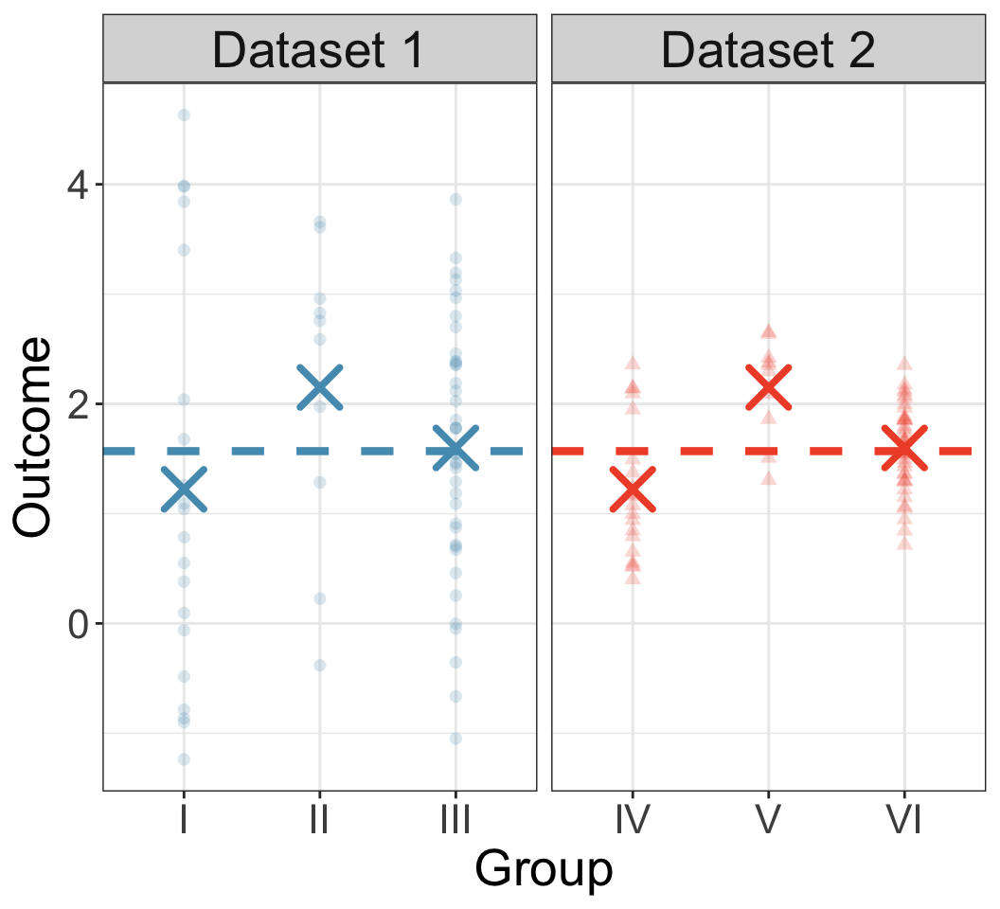
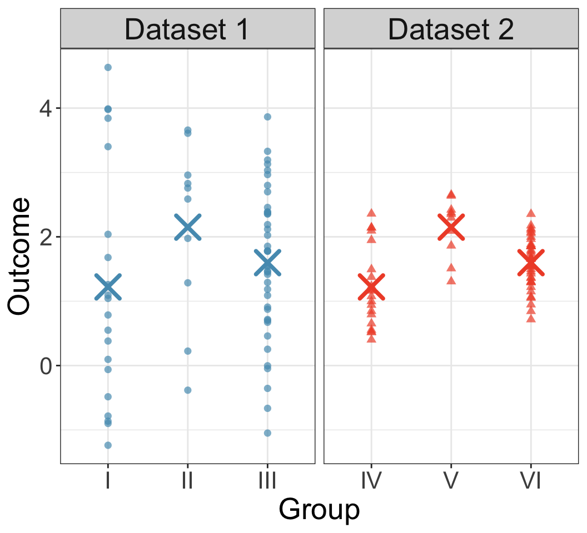
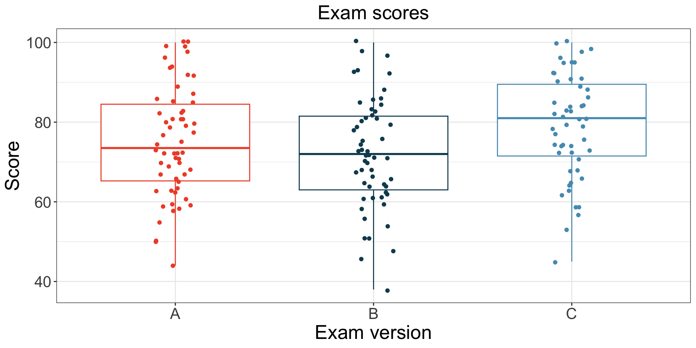
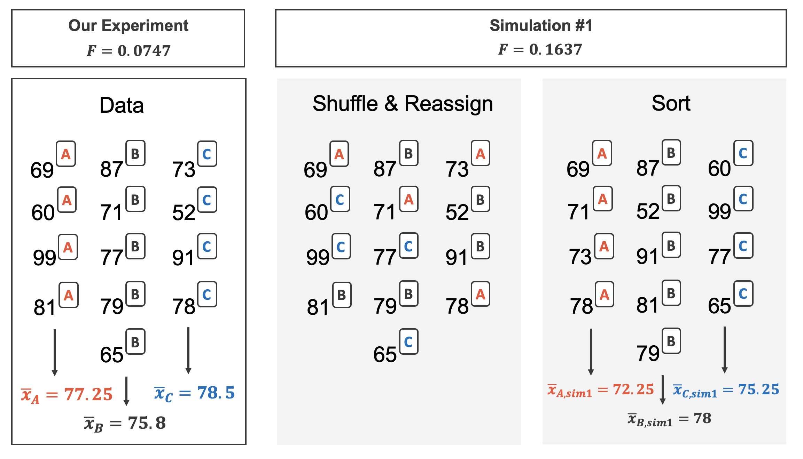
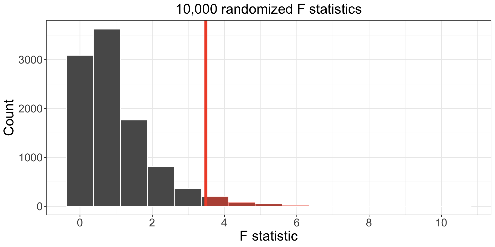
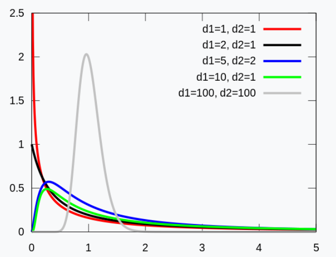
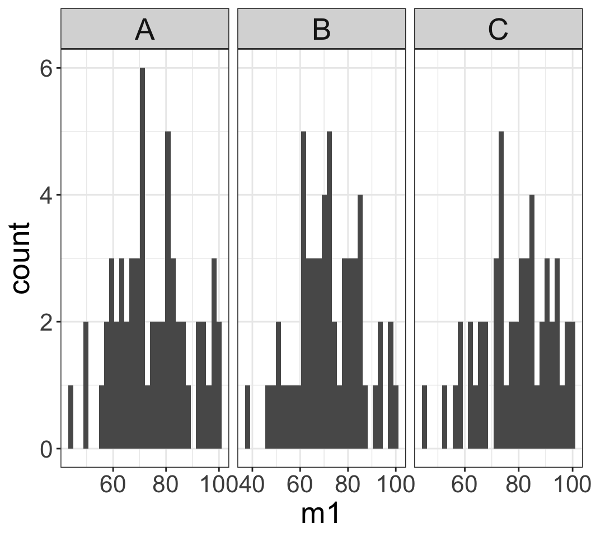
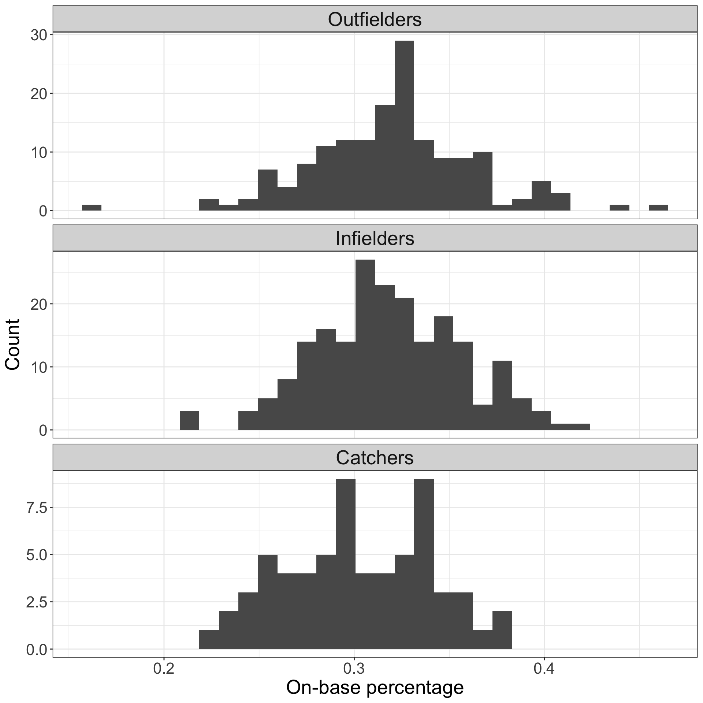

We saw previously how to compare population means of two populations.
Suppose we want to compare means across many populations (e.g., SAT scores by city).
Imagine doing all pairwise comparisons:
LA vs SF, SF vs San Jose, Davis vs San Jose, …
However, as we do more and more comparisons, likely that we will see differences in data that are solely due to random chance.
We will discuss this for our final lecture.
We will instead perform a single comparison incorporating all populations.
This is the goal of the analysis of variance (ANOVA) technique which we will talk about today.
ANOVA
ANOVA uses a single hypothesis test to check whether means across many groups are equal. If \(k\) groups,
\(H_0\): All \(k\) groups share the same mean outcome: \[\mu_1 = \mu_2 = \cdots = \mu_k\] where \(\mu_j\) represents the mean of the outcome for observations in group \(j.\)
\(H_A\): At least one mean is different.
Must check three conditions on the data before performing ANOVA:
the observations are independent within and between groups,
the responses within each group are nearly normal, and
the variability across the groups is about equal.
Example: class exam
Consider three sections of the same intro stats course.
Are there substantial differences between these three sections (A, B, and C) in the first midterm exam scores?
Appropriate hypotheses may be written in the following form:
\(H_0\): The average score is identical in all sections, \[\mu_A = \mu_B = \mu_C.\] Assuming each section is equally difficult, the observed difference in exam scores is due to chance.
\(H_A\): The average score varies by class. We would reject the null hypothesis in favor of the alternative hypothesis if there were larger differences among the class averages than what we might expect from chance alone.
In ANOVA, strong evidence favoring the alternative hypothesis typically comes from unusually large differences in the group means.
Key to assessing this: look at how much the means differ relative to the variability of individual observations within each group.
Consider the following toy ANOVA Data
Does it look like the diffrnces in group means could come from random chance?
Compare I vs II vs III, then compare IV vs V vs VI
group I has same center as group IV; group II has same center as group V; group III has same center as group VI.

Figure 1: Data shown as points. Crosses indicate group means.
Consider the ratio \[\frac{\text{between-group variability}}{\text{within-group variability}}\]
What does this look like for Groups I/II/III? For groups IV/V/VI?
What does a large ratio value suggest? What does a small ratio value suggest?
(see next slide)
Groups I/II/III: it is plausible that difference in group centers is due to random chance.
Groups IV/V/VI: difference in group centers seem large relative to variability within each group, possibly due to true differences across groups.
F statistic
Goal: assess whether the observed variability in sample group means is due to random chance.
For between-group variability, consider the sum of squares between groups (SSG): \[SSG = \sum_{j=1}^k n_j (\bar x_j - \bar x)^2\]
\(k\) is the number of means we are comparing;
\(n_j\) is the number of observations in group \(j\);
\(\bar x_j\) is the sample mean of group \(j\);
\(\bar x\) is the overall sample mean across all observations.
For within-group variability, consider the sum of squares errors (SSE): \[\begin{align*}SSE&= \sum_{j=1}^k \sum_{i=1}^{n_j} ( x_{j,i} - \bar x_j)^2\end{align*}\]
SSG: variability of group means (weighted by group size)

SSE: variability within each group

Data shown as points. Crosses indicate group means.
F statistic
It turns out that the sum of squares total (SST)\[SST \;\;=\;\; \sum_{i=1}^n (x_i - \bar x)^2\] is the sum of SSG and SSE: \[SST \;\;=\;\; SSG + SSE\] which can be shown using a bunch of algebra.
(Note: I am using the textbook’s abbreviations for SSG, SSE, and SST. For this course, I would like you to do the same. But other texts may use different abbreviations, such as total sum of squares (TSS), and SST might refer to sum of squares for treatment, which is our SSG. Therefore, it is very important that you understand what each abbreviation means and the intuition behind them, and not just memorize the abbreviations.)
For reasons we’ll see later, we’ll want to use scaled versions of SSG and SSE:
The mean square between groups (MSG) is a scaled version of SSG; the mean squared errors (MSE) is a scaled version of SSE:
The F statistic is defined to be ratio of these two: \[F \;=\; \frac{MSG}{MSE}.\]
Typically use software to compute. Not worth doing by hand.
Let’s now do a randomization test using this F statistic to see if the differences in means are likely due to random chance or not.
Example: class exam
A teacher gave three versions (A, B, C) of an exam.
Data is summarized in table/plot to the right.
Is the exam difficulty the same across the three versions?
Hypothesis test:
\(H_0\): All three versions are equally difficult. \[\mu_A = \mu_B = \mu_C\]
\(H_A\): At least one version is inherently more (or less) difficult than the others.
Version
n
Mean
SD
Min
Max
A
58
75.1
13.9
44
100
B
55
72.0
13.8
38
100
C
51
78.9
13.1
45
100

Figure 2: Exam scores for each of the three sections.
Class Data Randomization Test
Randomization test with many means: same idea as in two means.
Null assumption: versions are equally difficult.
Exam version (A or B or C) is randomly allocated to the exam scores, under the null assumption.

For each simulation, we calculate the F statistic.

Figure 3: Histogram of 10,000 randomized F statistics.
297 of 10,000 simulations had an F statistic greater than or equal to the observed value 3.48.
p-value 0.0297 is below 0.05, so we reject \(H_0\).
Conclusion: our observed value is unlikely due to chance if all exams were equally difficult.
Test statistic for three or more means is an F statistic
Recall: the F statistic is a ratio of how the groups differ (MSG) as compared to how the observations within a group vary (MSE).
\[F = \frac{MSG}{MSE}\]
When the \(H_0\) is true and the conditions below are met, the F statistic follows an F distribution with parameters \(df_1 = k-1\) and \(df_2 = n-k.\)
Conditions:
the observations are independent within and between groups,
the responses within each group are nearly normal, and
the variability across the groups is about equal.
F distribution
is determined by two parameters, \(df_1\) and \(df_2\), representing deg of freedom
is always non-negative, so it does NOT look like t or normal distribution

Mathematical model, test for comparing 3+ means
The F-distribution allows us to use a mathematical approach to evaluate the null hypothesis.
The \(p\)-value for the problem is given by the area under the F-distribution curve to the right of the observed F-statistic value.
Also known as the “right-tail area”
Functions in R can be used to calculate percentiles and areas for F statistics
pnorm(), pt(), pf() - percent of data to the left of a certain value
qnorm(), qt(), qf() - value corresponding to data at a certain percentile
Examples: class exams
So if we return to the data here
Version
n
Mean
SD
Min
Max
A
58
75.1
13.9
44
100
B
55
72.0
13.8
38
100
C
51
78.9
13.1
45
100
The F statistic for this data was 3.48
Mathematical approach for calculating \(p\)-value:
df: degrees of freedom \(df_1=k-1\) and \(df_2=n-k\)
sumsq: SSG (top) and SSE (bottom)
meansq: MSG (top) and MSE (bottom)
statistic: F statistic: \(F = \frac{MSG}{MSE}\)
p.value: p-value for the F statistic
Is this p-value valid? Need to check conditions:
Independence: if data comes from simple random sample, this holds. For students we aren’t sure, so this might present problems, but let’s assume it’s OK
Approximate normality - when sample size is large and no extreme outliers, then this is ok
Approximately constant variance - each group has approximately the same variance

Thus, we can use to reject \(H_0\) under 0.05 discernibiliity level.
Example: Batting in MLB
Does batting performance of baseball players differs according to position?
Outfielder (OF)
Infielder (OF)
Catcher (C)
Data: 429 Major League Baseball (MLB) players from 2018, each \(\geq 100\) at bats.
Does the on-base percentage (OBP) differ across these 3 groups?
Some variables and descriptions:
# A tibble: 4 × 2
variable col1
<chr> <chr>
1 name Player name
2 team abbreviated name of the player's team
3 position player's primary field position (OF, IF, C)
4 OBP On-base percentage
First few rows:
name
team
position
OBP
Abreu, J
CWS
IF
0.325
Acuna Jr., R
ATL
OF
0.366
Adames, W
TB
IF
0.348
Adams, M
STL
IF
0.309
position has three levels:
unique(mlb_players_18$position)
[1] OF IF C
Levels: OF IF C
Null and alternative hypotheses:
\(H_0\): the OBP for these three positions is the same; \[\mu_{OF} = \mu_{IF} = \mu_C\]
\(H_A\): there is some difference among these three groups: \[\mu_{OF} \neq \mu_{IF}, \quad \mu_{IF} \neq \mu_C, \quad\text{or}\quad \mu_{OF} \neq \mu_C\]
ANOVA analysis
First, we need to check the conditions for F statistic / ANOVA analysis to hold.
Independence: if data comes from simple random sample, this holds. For MLB we aren’t sure, so this might present problems, but let’s assume it’s OK
Approximate normality - when sample size is large and no extreme outliers, then this is ok
Approximately constant variance - variance within each group is approximately the same across groups

Does appear to be approximately normal, no extreme outliers
We see that variability across the groups is quite similar
So our F statistic analysis can proceed
MLB ANOVA Output
To do analysis of variance, we use lm() and anova():